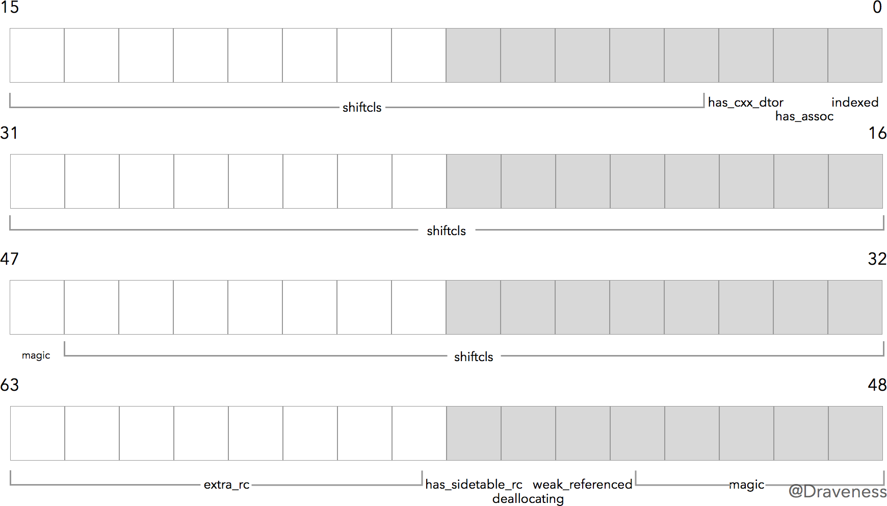

目录：
- isa指针
objc_object和objc_class结构体isa指针的作用isa_t结构体
objc_object和objc_class结构体
ObjC都是C语言结构体，所有对象都包含一个类型为isa_t的isa指针
123struct objc_object {isa_t isa;};所有继承自NSObject的类的实例化后的对象都会包含一个类型为isa_t的结构体
在ObjC的Class定义为一个名为
objc_class的结构体：123456struct objc_class : objc_object {isa_t isa;Class superclass;cache_t cache;class_data_bits_t bits;};可以看出
objc_class结构体是继承自objc_object的，所有的类也有一个isa，所以Objc中的类本身也是一个对象
isa指针的作用
首先对象的方法（实例方法、类方法）是不存储在对象的结构体中的，不然创建同一个类的不同对象会造成内存的冗余，所以：
- 当实例方法被调用时，会通过对象的isa来查找对应的类，然后在
class_data_bits_t结构体中查找对应方法的实现，同时使用super_class来查找继承的类，进而找到继承的方法 - 当类方法被调用时，会通过类的isa来查找对应的元类，然后在元类查找对应类方法的实现，以保证通过相同的机制来查找方法的实现
|
|

上图是各个对象的isa的指向图，这里需要注意的是，在64位以后才有的isa_t类型这个结构体，需要通过一定的处理才能得到他需要指向的对象，而在64位以前是isa类型，单纯的指向它需要的对象，下面会讲到。
isa_t结构体
源码定义：
- x86_64:
12345678910111213141516171819202122232425#define ISA_MASK 0x00007ffffffffff8ULL#define ISA_MAGIC_MASK 0x001f800000000001ULL#define ISA_MAGIC_VALUE 0x001d800000000001ULL#define RC_ONE (1ULL<<56)#define RC_HALF (1ULL<<7)union isa_t {isa_t() { }isa_t(uintptr_t value) : bits(value) { }Class cls;uintptr_t bits;struct {uintptr_t indexed : 1;uintptr_t has_assoc : 1;uintptr_t has_cxx_dtor : 1;uintptr_t shiftcls : 44;uintptr_t magic : 6;uintptr_t weakly_referenced : 1;uintptr_t deallocating : 1;uintptr_t has_sidetable_rc : 1;uintptr_t extra_rc : 8;};};- arm64:
123456789101112131415161718192021222324#define ISA_MASK 0x0000000ffffffff8ULL#define ISA_MAGIC_MASK 0x000003f000000001ULL#define ISA_MAGIC_VALUE 0x000001a000000001ULL#define RC_ONE (1ULL<<45)#define RC_HALF (1ULL<<18)union isa_t {isa_t() { }isa_t(uintptr_t value) : bits(value) { }Class cls;uintptr_t bits;struct {uintptr_t indexed : 1;uintptr_t has_assoc : 1;uintptr_t has_cxx_dtor : 1;uintptr_t shiftcls : 33;uintptr_t magic : 6;uintptr_t weakly_referenced : 1;uintptr_t deallocating : 1;uintptr_t has_sidetable_rc : 1;uintptr_t extra_rc : 19;};};（MacOS，虚拟机是x86_64，而iOS是arm64）
可以看出不同的架构上，字段是一样的，只不过位数和实现上有些差别，这里统一用x86的来讲解
isa_t是一个union类型的结构体。其中的isa_t、cls、bits还有结构体共用同一块地址空间。而实际上isa总共会占据 64 位的内存空间，可以从bits看出来
下面我们从初始化的过程来看这64位每一位的意义：
1234567891011121314151617inline voidobjc_object::initInstanceIsa(Class cls, bool hasCxxDtor){initIsa(cls, true, hasCxxDtor);}inline voidobjc_object::initIsa(Class cls, bool indexed, bool hasCxxDtor){if (!indexed) {isa.cls = cls;} else {isa.bits = ISA_MAGIC_VALUE;isa.has_cxx_dtor = hasCxxDtor;isa.shiftcls = (uintptr_t)cls >> 3;}}对整个
isa的值bits进行设置，传入ISA_MAGIC_VALUE：1
可以看出实际上设置的是
indexed以及magic这两个字段indexed表示isa_t类型：- 0在迁移到64位之前的时候使用，这时候的isa是没有struct部分，通过object->isa得到的是cls的指针（那时不是isa_t类型，而是isa类型）
- 1在迁移到64位之后的时候使用，这时候的isa增加了struct部分，通过object->isa得到的是64位的bits值（需要用
shiftcls位的偏移来获取cls的指针）
magic的值为0x3b用于调试器判断当前对象是真的对象还是没初始化的空间TODO: magic值具体怎么判断当前对象的
has_cxx_dtor实际上也是64位中的1位，表示当前对象时候有C++、ObjC的析构器shiftcls就是类指针，因为类指针规定要按照字节（8bit）对齐内存，所以后三位bit为000（可以输出[NSObject class]指针看下），这里为了减小内存消耗，特意右移3位写进shiftcls内，这个字段就相当于64位以前的isa类型指针，遵循上面的指向图【同时可以打印对象指针，可以发现对象内存地址的后四位都是0，说明ObjC在初始化内存时是以16字节对齐的，分配的内存地址后四位都是0】
注意：
由于改版至64位，不可以通过object->isa直接获取cls指针，所以新增了ISA()方法来获取
123456inline Classobjc_object::ISA(){return (Class)(isa.bits & ISA_MASK);}
其他bits
在
isa_t中，我们还有一些没有介绍的其它 bits，在这个小结就简单介绍下这些 bits 的作用has_assoc对象含有或者曾经含有关联引用，没有关联引用的可以更快地释放内存weakly_referenced对象被指向或者曾经指向一个 ARC 的弱变量，没有弱引用的对象可以更快释放deallocating对象正在释放内存has_sidetable_rc对象的引用计数太大了，存不下extra_rc对象的引用计数超过 1，会存在这个这个里面，如果引用计数为 10，extra_rc的值就为 9